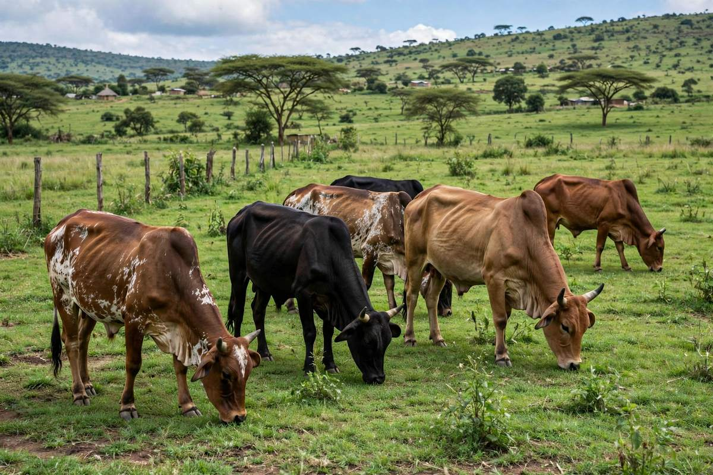

ℹ️ About FarmConnect Zambia
A free, simple website that helps farmers grow better, sell further and own land safely.
FarmConnect Zambia brings farming advice, rain and disease alerts, a village market, farm land listings and a transport board together in one place that works on a basic phone and on slow data.
What we do
🌦 Weather & Alerts
Seasonal advice by location, rain reports from farmers and disease alerts nearby.
🛒 Village Market
Free listings for crops, vegetables, livestock, eggs and honey.
🏞 Farms & Land
Farms, plots and ranches for local and international buyers.
🚚 Transport
Offer or find transport to take produce to market.
🌱 Farm Help
Tips on crops, animals, soil, climate and selling, plus a disease problem solver.
Our promise
Send us a message
Questions, ideas or something wrong on the site? Leave your name and a phone number or email so we can reply.
FarmConnect Zambia is created and owned by Msimuko Cephas. All rights reserved.